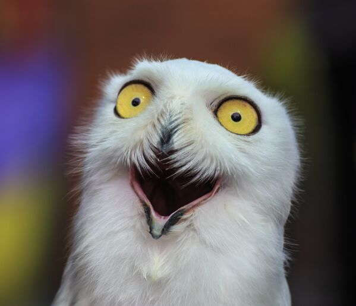
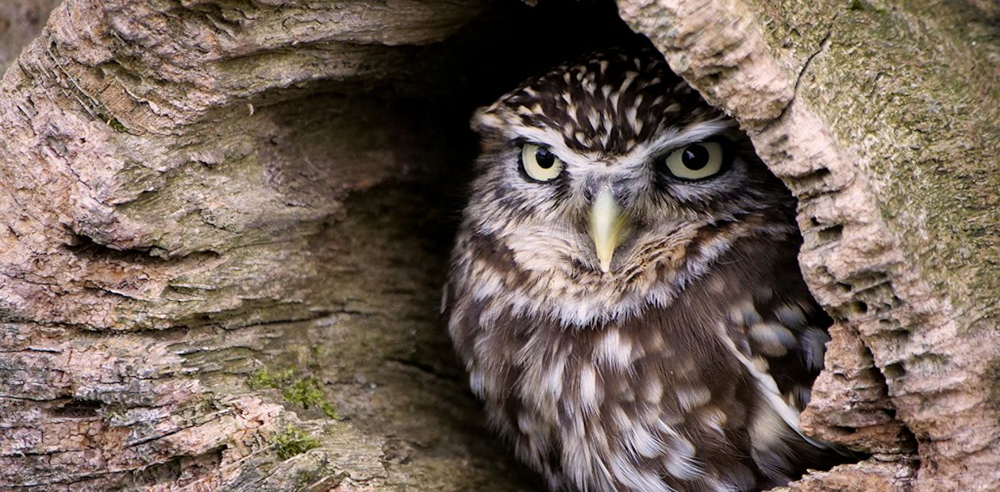
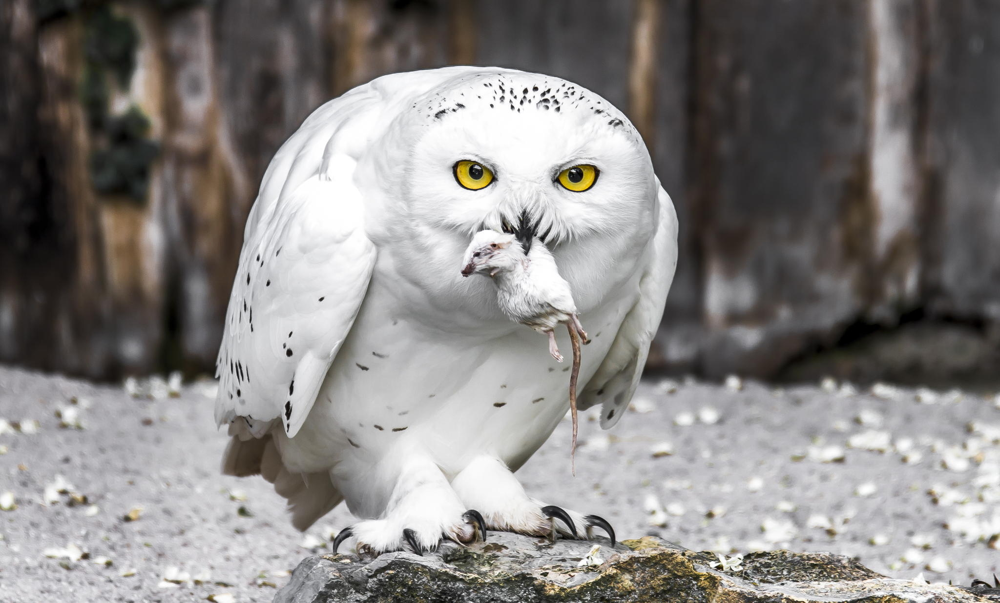

Сова — хищная птица из отряда «Совообразные». Он включает более двух сотен видов пернатых. Совы распространены по всему земному шару, они обитают в горах, лесах, степях, на морских побережьях и даже на Крайнем Севере. Большая часть из них ведет ночной образ жизни и охотится в темное время суток. В статье подробно узнаем об образе жизни сов, что они едят, особенностях размножения и правилах содержания в доме или квартире.

Однозначно ответить на вопрос, перелетная птица сова или нет сложно, в основном птицы отряда сов предпочитают оседлый образ жизни и селятся парами. Основной пик их активности приходится на ночное время, днем они сидят в своих гнездах либо на ветках деревьев. Совы не особые любители строить гнезда и могут занять чужое или попросту отложить яйца в небольшое углубление в земле. Яиц за раз у них бывает обыкновенно от 4 до 10. Вылупившиеся птенцы в случае недостатка питания могут поедать друг друга./
Примерно месяц они проводят в родительском гнезде, после чего вываливаются и начинают самостоятельную жизнь либо сами идут кому-то в корм, к примеру своим заклятым врагам – дневным хищникам, таким как беркуты, орлы и ястребы. Вообще совы – ночные птицы, в течение дня они могут перелетать с места на места только в том случае, если их кто-то потревожил или они подверглись нападению дневных хищников, в противном случае они будут прятаться в кронах деревьев, изредка подавая ухающие звуки, чтобы очертить границы своей территории либо для привлечения самок, которые, к слову, несколько крупнее, чем самцы..

Абсолютно все разновидности сов питаются исключительно животной пищей, такой как черви, большие насекомые, змеи и ящерицы. Некоторые виды питаются рыбой, пойманной на мелководье, но основная часть популяции сов предпочитает мелких грызунов, птиц и иногда летучих мышей..
Наиболее крупные филины охотятся на ежей, куропаток, фазанов, тетеревов и даже на хищных птиц. Падалью совы не питаются. Зимой они могут делать запасы непосредственно в своих гнездах. Иногда там скапливаются по несколько десятков замороженных полевых мышей. Без воды совы могут проводить до нескольких месяцев. Необходимый уровень жидкости им обеспечивает кровь из пойманной добычи. Сова охотится и, соответственно, питается, в темное время суток.

Если вам так надо, то вот, смотрите